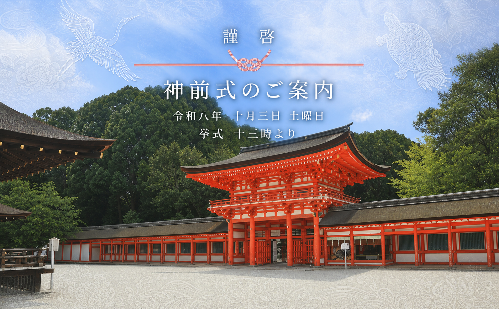

結婚式・和風
季節と祝宴。
元プロダクトの和風ウェディング素材を使った、実装デザインの紹介です。

SOURCE DESIGN / WASHIKI
EXTRACTED FROM PRODUCT
和の色と大きなキービジュアルを軸に、会場案内や出欠回答へつなぐ構成です。
元プロダクトの和風ウェディング素材を使った、実装デザインの紹介です。

SOURCE DESIGN / WASHIKI
和の色と大きなキービジュアルを軸に、会場案内や出欠回答へつなぐ構成です。